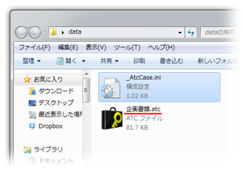
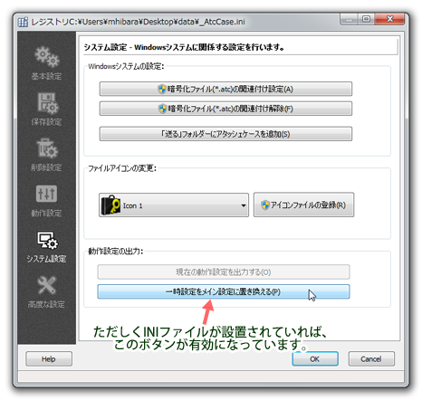

アタッシェケースでは、レジストリとは別に.INIファイルとして設定を保存することができます。
また、作成したその.INIファイルを個別に読み込むことで、動作設定を起動時に切り替えることが可能です。
暗号化ファイルを各所の異なるPCで復号しなくてはならない場合や、
アタッシェケースのインストールされていない環境へUSBフラッシュメモリなどで持ち込む場合など、
常に自分好みの設定でアタッシェケースを起動したい方には便利な機能です。
INIファイルとは

アプリケーションの設定情報を書き込むテキスト情報のことです。
拡張子こそ".ini"となっていますが、中身はテキストファイルです。
よってエディタなどでユーザー自らの編集が可能ですが、
誤って 変更すると動作の保証ができなくなるので扱いには注意が必要です。
アタッシェケースでは、iniファイルではなく、Windowsのシステム （レジストリ）に設定情報を保存していますので、
そもそもこの ファイルは不要ですが、設定情報を他のPCへ持ち出したいときや、
処理ごとに設定を替えて切り出しておきたい場合に、INIファイル として保存して利用すると便利です。

動作設定の「システム」タブを開き、「現在の動作設定を出力する」ボタンを押します。
.INIファイル形式を選択して、「_AtcCase.ini」というファイル名で出力します。ここに現在の設定内容がすべて書き出されます。
前の項目で出力した.INIファイルの設定内容で起動したい場合は、
「_AtcCase.ini」ファイルを以下の場所に置いてアタッシェケースを起動する必要があります。
- カレントディレクトリ
- アタッシェケース本体（AtchCase.exe）のあるディレクトリ
- 処理したいファイルや暗号化ファイルのあるディレクトリ
上記の順番で「_AtcCase.ini」ファイルを探索し、見つかったときに読み込まれますので、
複数箇所にINIファイルが置かれると、予期しない設定動作になることがあります。
通常、何もせずに（設定のINIファイルをどこにも置かずに）アタッシェケースを起動すると、
レジストリにある設定内容で起動します。
以下のように、アタッシェケース本体（AttacheCase.exe）のある場所に.INIファイルを置きます。

あるいは、処理するファイル/または暗号化ファイルの横に.INIファイルを置きます。

後者の場合、ファイル/暗号化ファイルは、直接アタッシェケースアイコンにドラッグ＆ドロップするか、
関連付け起動する必要があります（起動してからファイルをドロップしても、
そのディレクトリにある.INIファイルを参照しないので注意が必要です）。
そうすることで、一時的に.INIファイルの内容で動作設定が行われ、アタッシェケースは起動します。
なお、「_AtcCase.ini」のファイル名は固定です。
名前は変更しないでください。アタッシェケースは、設定ファイルを中身ではなく、そのファイル名で判断し読み込んでいます。
前述の方法で、設定した.INIファイルを読み込んでから、
動作設定の「システム」タブを開き、「一時設定をメイン設定に置き換える」ボタンを押してください。

そうすることで、.INIファイルの内容がレジストリへ読み込まれ、メイン設定として上書きされます。